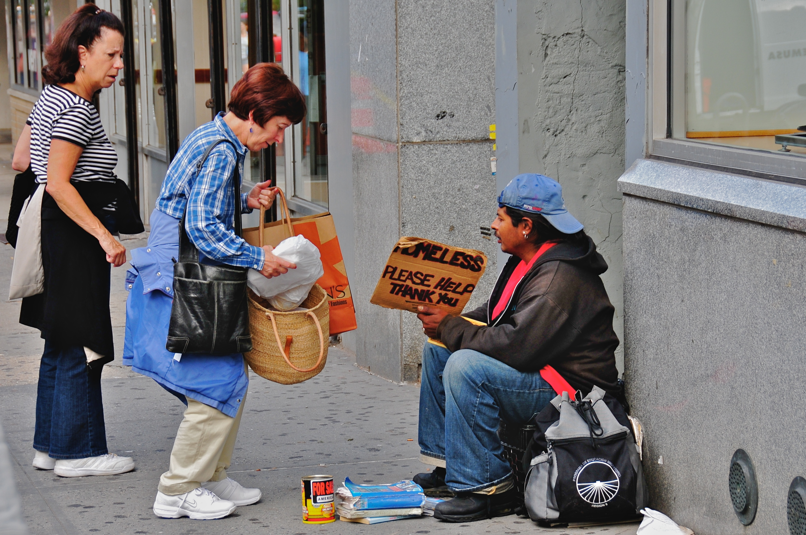
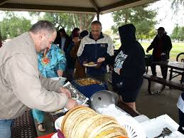
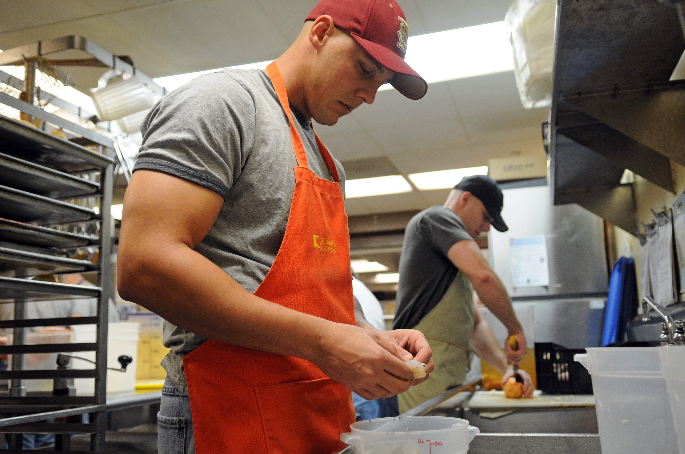
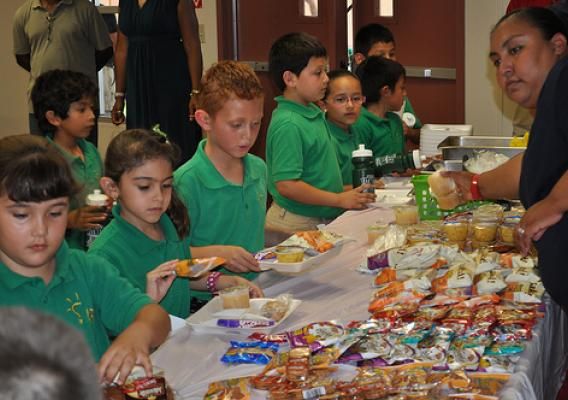
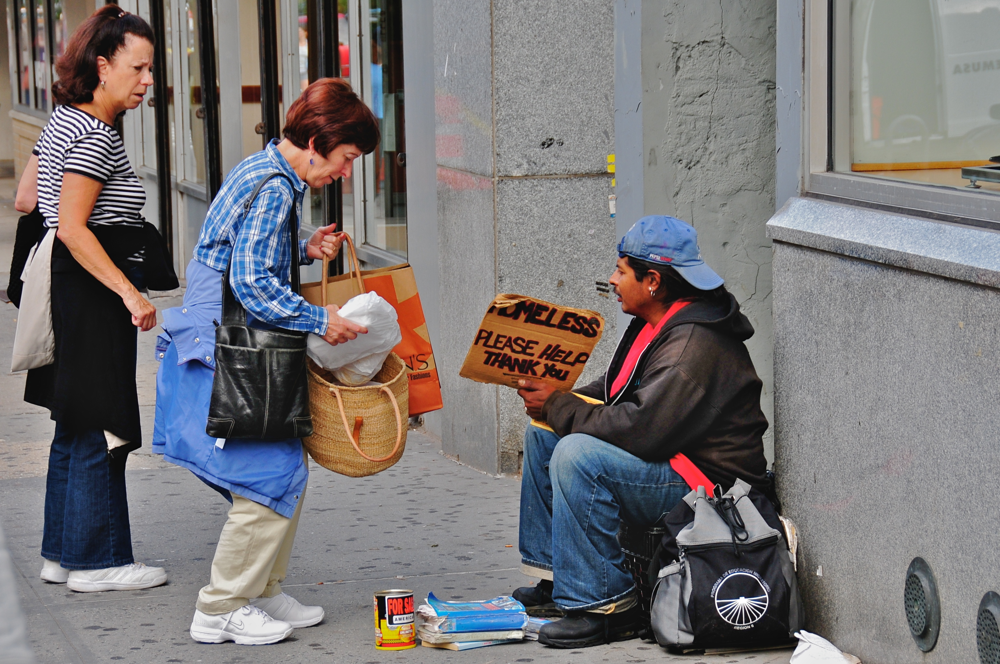
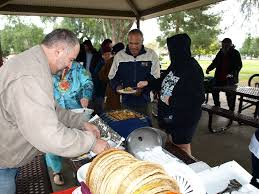
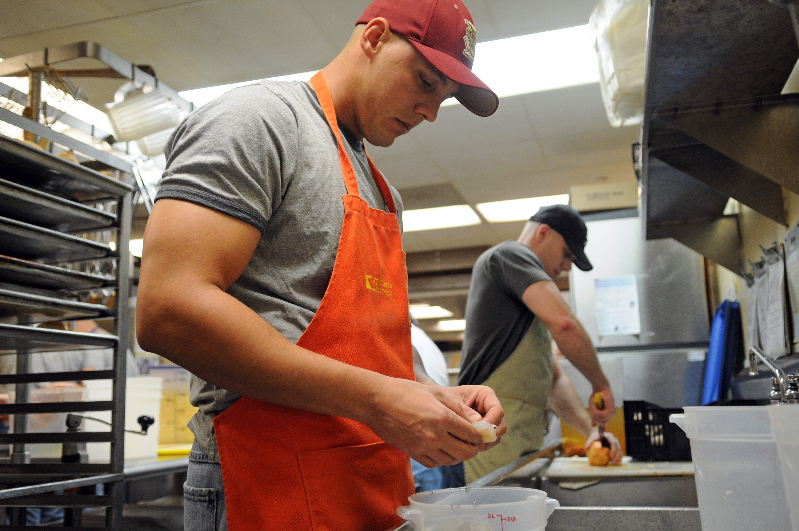
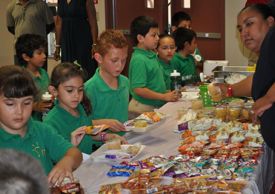

Why is it Important?
Helping feed people in this country is important because around 40 million Americans struggle with finding something to eat while living in poverty. Amoung the 40 million Americans strugling with hunger is about 12 million children. One of the problems that those stuggling to afford food is that much of the food they can afford is unhealthy, sugary food. This is a problem because they want to eat healthy and live healthy lives but because of the high prices of fresh produce, they can not afford it.

 







Taking Action
There are many ways for you to help feed the less fortunate. Here are some ways you could help:
- Serve at a Soup Kitchen
- Organize food drives
- Donate to Feeding America